[Android] Signal
{kind=link}
Signal - 畅所欲言。
一款强制端到端加密，以手机号作为识别码的非匿名即时通讯。
开发者：Signal Foundation | 官方网站 | 源代码
客户端 GPLv3, 服务端 AGPLv3 | 服务条款与隐私政策
简介
你用过苹果设备吗？
如果用过，你应该熟悉苹果的 iMessage. 或者如果你没听说过 iMessage, 你应该注意到了，在给同样使用苹果设备的朋友发短信时，能使用一些有趣的功能。
不过 noarch 要介绍的不是 iMessage, 而是想与 iMessage 竞争，并且使用体验可以和 iMessage 很像的 Signal.
与 iMessage 不同的是，Signal 不需要一台苹果设备，并且端到端加密。
除此之外，它的客户端和服务端都完全自由，没有广告和追踪器，最重要的是 - 它永久免费，并且全靠捐款运作。
手机号即是帐号
如果你在手机流行之前用过 QQ, 那么你应该对“交换 QQ 号”这件事印象深刻。在那时，QQ 只是一个独立的网上身份，在技术上不与你的任何其他身份相关联。
虽然 QQ 现在注册需要实名手机号，但它的背后工作原理依然需要一个独立的 QQ 号。noarch 认为这是大多数中国人对“即时通讯”概念的认识。
如果你是 noarch 上述的“大多数”，在使用 Signal 前，你需要完全抛弃以前对即时通讯的认识。
Signal 致力于提供一个像短信一样的使用体验，这也意味着你的手机号是唯一识别码：除非你专门屏蔽，否则任何知道你手机号的人都可给你发消息；你也无法在更换手机号时迁移你的帐号。
威胁模型
noarch 在最上方的一览中提到了 Signal 目前不提供匿名功能，任何与你聊天的人将能看到你的手机号。
这也注定了 Signal 无法被当作 Telegram 或 Matrix 等更加匿名的即时通讯使用 - 在中国，你需要更多的是匿名性；而 Signal 完全没有提供匿名性。看到你的中国手机号意味着能直接看到你的真实身份：警察可以直接通过手机号查出你的户籍，而其他人则可以通过贿赂警察或使用泄露的数据库达到此效果。
所以，为什么还使用 Signal 呢？
-
首先，虽然 Signal 不匿名，但你依然可以用它和已经认识且非常亲密的人通讯。
- 家人，以及现实中的朋友已经知道你的真实身份，所以你也不需要在线上为他们隐藏你的身份。
-
其次，如果你不在中国大陆或其它限制匿名上网的国家，那么 Signal 不匿名这点应该对你没啥影响。
- 这是因为你的手机号实名性不强 - 敌人通过你的手机号找出你真实身份将没有那么容易。
-
最后，Signal 的易用性无法比拟。
- noarch 认为 Signal 的设计目标是取代传统短信，没有复杂功能，这使得它非常简单易用。
- 包括以手机号识别身份这点，Signal 的诸多操作逻辑都与传统短彩信一样。
Signal 与 Google 服务
noarch 注意到了 Signal 的 Android 版依赖 Google 服务框架进行推送通知。
Signal 在其开发初期需要 Google 服务框架才能运行。这是因为严格上 Android 应用需要 Google 框架来推送通知，及时送达消息。没有了 Google 服务框架提供的推送通知服务，Signal 需要长期保持后台运行并维持一个 WebSocket 开放以推送消息，而 Android 是禁止这么做的。
从2017年2月起，Signal 不再要求 Google 服务框架才能启动；在此之后，如果你没有 Google 服务框架，Signal 会向你发送通知，告诉你如果没有 Google 服务框架 Signal 可能会被杀死后台而无法及时接收消息。
关于 Google 服务框架及其替代，请看这里。
准备好了吗？
除了上述弊端，Signal 在 noarch 看来是目前最容易上手的端到端加密通讯工具。
了解了上面的弊端和威胁模型，并将其牢记在心后，你就可以和 noarch 一起开始使用 Signal 了！
安装
Signal 和其它 Android 应用的安装没啥区别：Signal 官方提供了两个渠道，其中一个是 Google Play, 另一个则是直接通过 apk 安装。
如果你有 Google Play, 你可以直接去那里安装，然后跳到下一步；下面 noarch 将假设你没有 Google Play, 并且使用 apk 安装。
首先，在浏览器内打开 Signal 的 apk 下载页 https://signal.org/android/apk/.
滑动到下方，你可以看到 Danger Zone 以及一个 "Download" 按钮。
与从 Google Play 安装应用不同，直接从 Signal 官网下载
apk虽然经过 HTTPS 传输，但没有签名验证；这也是 Signal 不建议你直接安装apk的原因。noarch 在此为了简洁，不验证 Signal
apk签名。如果你觉得基础设施攻击是你的威胁之一，你可以选择从 Google Play 安装或手动验证签名。更多关于签名验证的知识，请看这篇来自 Qubes OS 的文章。

点击 "Download", 浏览器提示你下载或直接开始下载 Signal apk. 下载完成之后安装：

如果你的设备提示“出于安全考虑，已禁止您的设备安装来自此来源的未知应用”，请点击“设置”并允许来自你浏览器的未知来源应用安装。
请在允许未知来源之前确认要安装的应用是否的确是你要的！在 noarch 的例子里，请确认来源是 Bromite（浏览器），并且要安装的应用是 Signal.
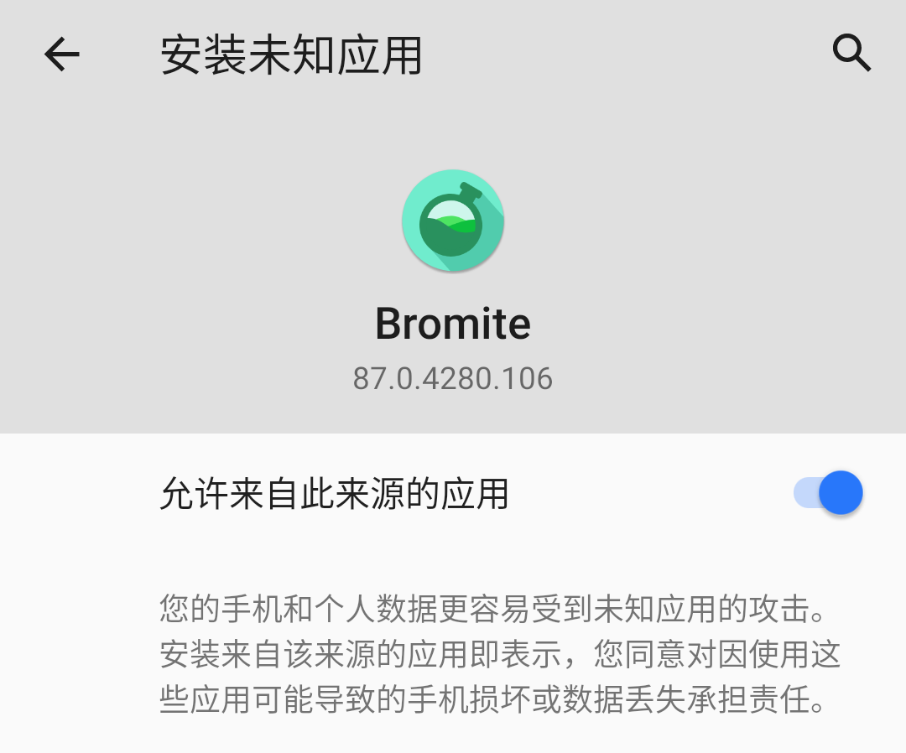
等待片刻，安装完成后“打开”。

注册帐号
你现在进入了 Signal 的欢迎页：

点击“继续”，Signal 会向你请求 通讯录权限。
Signal 不会以任何形式上传你的通讯录，但会使用它在本地识别联系人；允许 Signal 读取通讯录与否，取决于你要不要将 Signal 替代设备自带短信应用。
noarch 在本章里不将 Signal 替换设备自带短信应用，因此 noarch 点击“稍后再说”拒绝了 Signal 的通讯录请求。
现在 Signal 需要你的手机号以注册帐号。noarch 在这里使用的是虚拟手机号，但你也可以使用真实手机号。
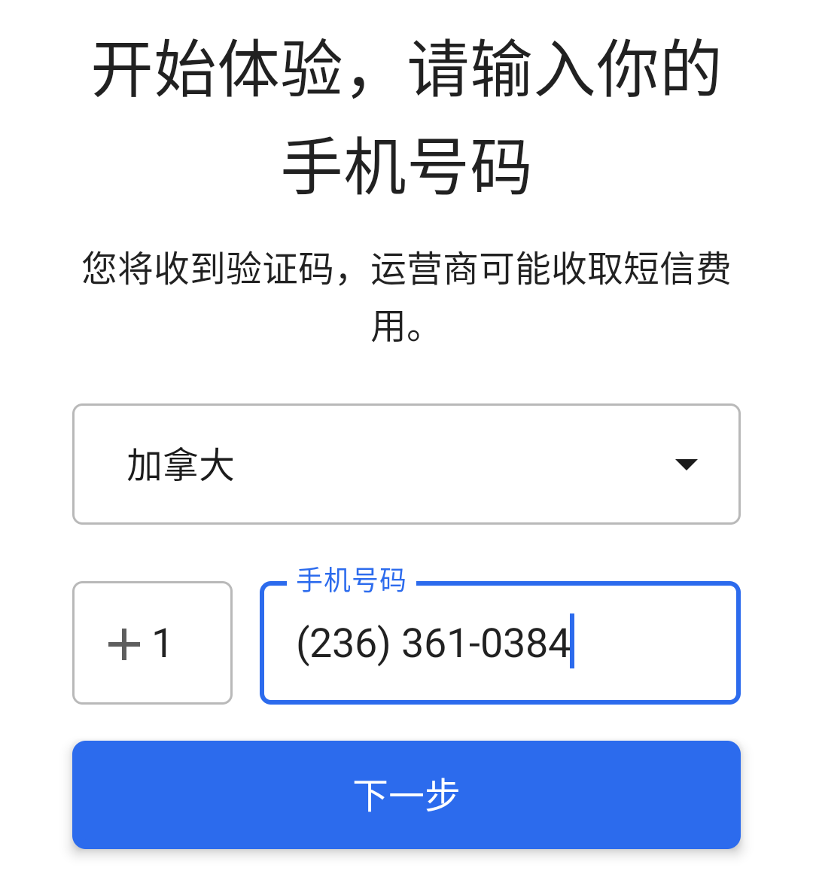如果你使用真实的 +86 手机号，请绝对只和最亲密的人使用 Signal.
下一步，Signal 会向你发送一条短信验证码。
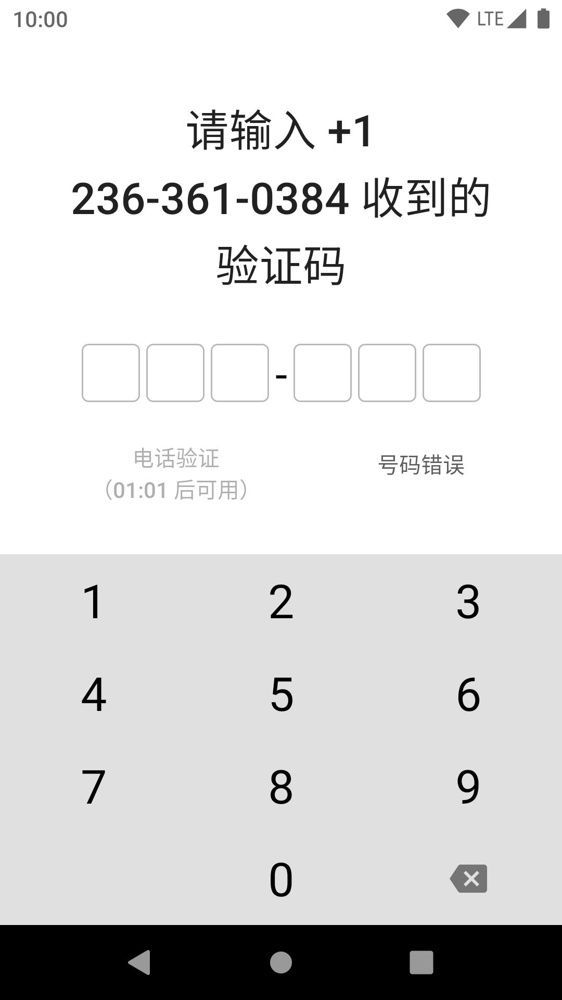 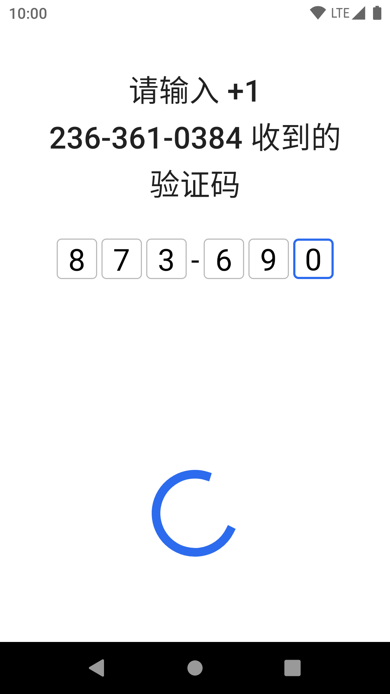如果你收不到短信验证码，你可以等一段时间，然后向 Signal 请求电话验证码。
验证完成后，就是填写个人信息的时间了。必填项只有“名字”，但你也可以选个头像和“姓氏”。
noarch 注意到众多中国用户在墙内及时通讯使用假名，却在墙外使用真名；这和例如 Signal 的墙外及时通讯在输入框内指示“名字”和“姓氏”不无关系。
尽管 Signal 叫你这么填，但你依然可以只填写一个假名。noarch 也建议你使用墙内从未使用过的假名，并且不用自己的脸做头像。

配置 Signal 的最后一步是设一个 PIN. 它用来加密 Signal 的本地存储，防止设备落入窃贼或警察手中时 Signal 消息被轻易读取。
绝对不要忘记这个 PIN! 如果你忘了它，所有历史消息将无法找回。

如果你：
- 获取了设备
root权限- 被迫使用华为，或任何具有
/data访问后门的设备- 大概率会被取证工具检查设备
请“创建字母数字 PIN”，并结合密码管理器生成的强密码使用 Signal. 这能更有效防止存储在本地的 Signal 消息被暴力破解。
创建完 PIN, 点击“下一步”，一个全新的聊天体验在等着你。

额外配置
Signal 主要为传统的短信使用习惯而设计，然而这些设计可能不符合你的使用习惯。
因此，noarch 总结了一些你可以在进入 Signal 后进行的隐私和使用习惯配置：
不将 Signal 设置为默认短信应用
点 关掉主界面“设置为默认短信应用”横幅即可。
禁用 PIN 码提醒
Signal 会定期提醒你输入 PIN 码以防你忘记。
如果你使用了密码管理器 + 混合密码，“提醒”你输入密码就完全没意义了；因此你可以将 PIN 提醒关掉。
从主界面开始，进入 -> 设置 -> 隐私，在底部取消选择 "PIN 提醒"，再确认一次 PIN 就可以关掉这个提醒。
其它隐私设置
在 Signal -> 设置 -> 隐私 里，还有一些选项你可能想要修改：
-
锁屏：开
类似诸多“应用锁”，用于在手机解锁时都锁定 Signal
-
隐身键盘：开
禁用键盘“云输入”以及自动学习，类似密码输入模式
-
总是转发通话：开
防止在通话时泄露真实 IP 地址
-
已读回执：关
关闭后，对方的消息只会在你回消息时被标记为“已读”，类似大多数中国即时通讯
-
注册锁定：开
如果你的设备被没收或被盗，打开这个选项可以给你更多时间通知朋友“不要再往该帐号发消息”
当你 将 Signal 变成你的形状 后，就来找一个朋友换到 Signal 聊天吧！
邀请第一个朋友上 Signal
现在，你可以把本章节转发给你的朋友，让他们也开始使用 Signal 了。当他们也开始使用 Signal, 下面 noarch 将教你如何开始一个聊天。
noarch 前面提到了 Signal 的操作逻辑和短信类似；这点从开始聊天时就能体验到。
例如，如果你要和一个人开始聊天，你只需要输入它们的手机号，然后发送消息即可；对方在收到你第一条消息后可以选择是否屏蔽你，但全程没有独立的“好友验证”过程。
要找一个朋友开始聊天，在主界面点击右下角的 ，你会进入像短信一样的“选择收件人”界面。
Signal 在这里又会向你请求通讯录权限；noarch 在这里选择拒绝。


如果你没有允许 Signal 读取联系人，你需要输入对方的完整手机号。在你输入的同时，输入框下方的列表中会出现“新消息至...”，点击它即可进入聊天界面。
如果对方的手机号不属于美国或加拿大，你还需要手动加上区号，例如
+86 17727378899

现在这个聊天界面是灰色的，代表你们以前没有用 Signal 通讯过；当你发出第一条消息，它会变成彩色。在 noarch 的例子里，当我发出第一条消息，聊天界面变成了粉色 (yay!)
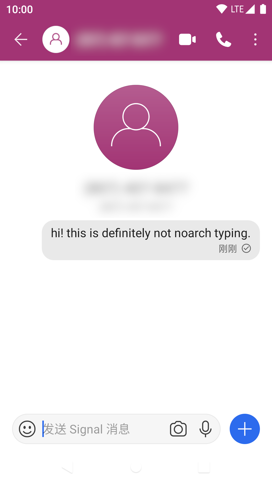作为一个模仿短信体验的即时通讯，你发出的第一条消息就是“好友请求”。对方在收到你的第一条消息之后，可以像其它及时通讯的好友请求一样允许，忽略（删除）和拒绝（拉黑）：

在对方点击“接受”之后，你们就可以像其它及时通讯一样聊天了！
如果你在理解图标上有困难，下面是 Signal 聊天界面各种图标的解释：
发语音
在 Signal 聊天界面，按住 可以发语音。
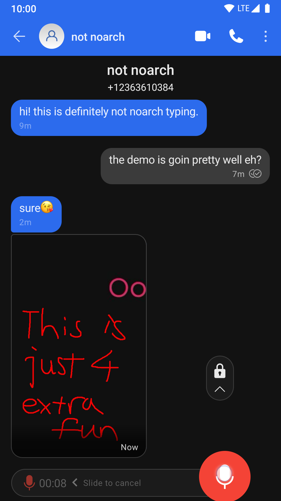如果你口误了，可以原地向左滑动取消语音录制；
如果你想录一首钢琴曲，原地上划可以锁定语音录制状态，然后把手机放到钢琴上即可，不用一直按着录制键；
录完之后，松手即可发送；或者如果你在锁定模式，点击 来发送。
发送媒体文件
Signal 作为一个及时通讯，同样可以发送视频和图片。
你可以点击消息框右侧的 来打开媒体选择菜单：
第一次打开时，Signal 会请求存储权限；点击“给予权限”并在弹出的权限请求中允许即可。

点击你要发送的媒体（可以是图片、GIF 或是视频），会根据对应媒体格式进入编辑器。
在图片编辑器里，你可以给剪裁图片、加文字、写写画画、打码甚至贴上贴纸；在视频编辑器里你可以粗略地剪辑视频。

剪辑完成后点击右下角的 来发送。
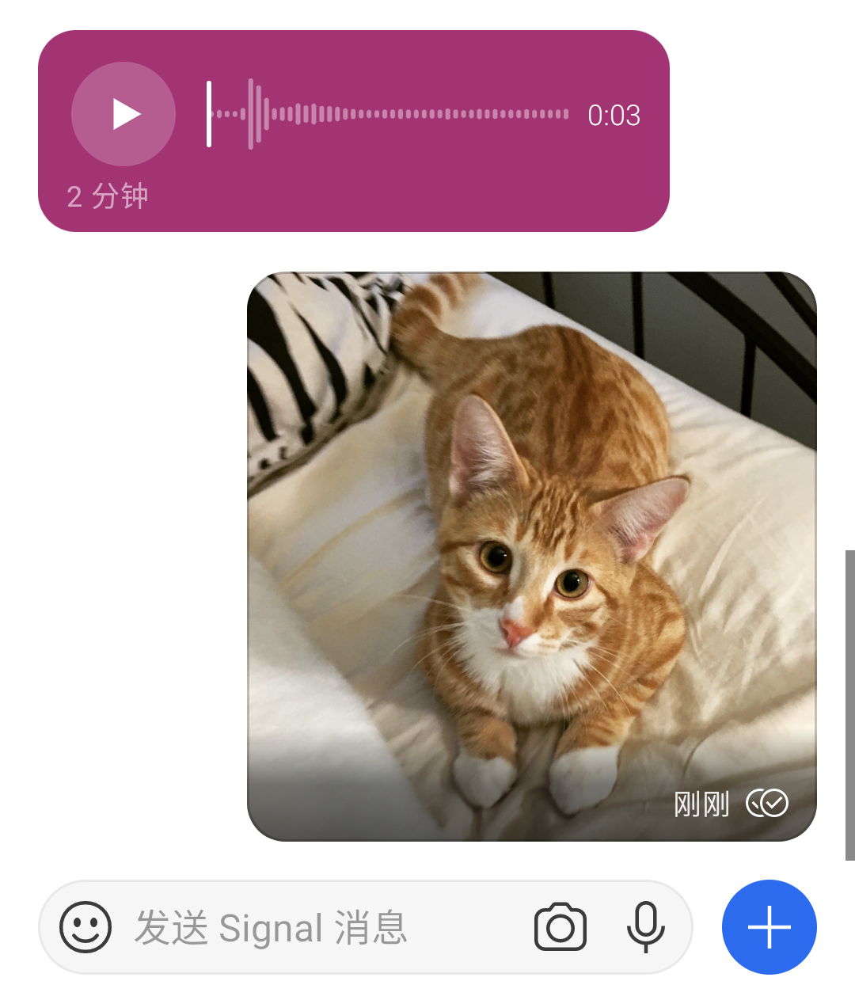多选媒体
点击 号调出的图片选择器只能选择一张图片并发送。如果你要一次性发一堆照片，刚才的方法就很麻烦。
还好 Signal 提供了照片多选功能。
在 号图片选择器中点击“相册”，你会进入一个文件夹视图：
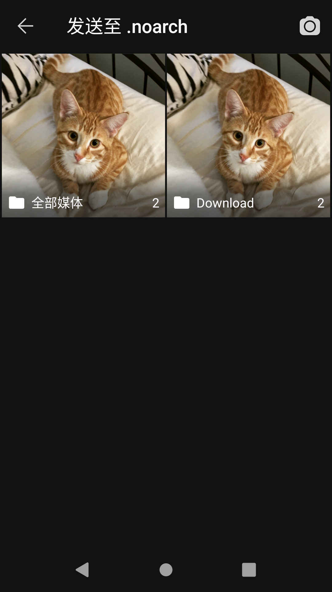你也可以点击图片编辑器下方图片列表最右侧的 号进入文件夹视图。
进入你要发送的图片所在文件夹（或是直接进入“全部媒体”），然后点击对应图片来选择。
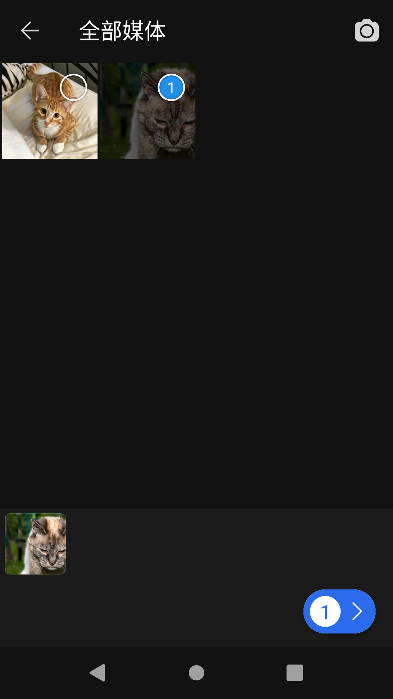选中的图片会以一个带数字的圆圈表示，数字代表图片发送顺序。
选择完之后，点击 就能进入你熟悉的图片编辑器；在图片编辑器里点相同位置的 就可以一次性发送多个媒体。
发原图（或文件）
Signal 发送原图不会去除图片中可能敏感的 EXIF 信息。不知道这么做的风险可能使你泄露自己的地理位置、设备型号，还有更多信息。
Signal 默认压缩发送的图片，并会去除图片中可能泄露隐私的 EXIF 信息。
但有时候你需要发送原图，以保证发送图片的质量。
Signal 没有专门的“发原图”功能，但你可以将图片以“文件”形式发送，这样 Signal 就不会以任何形式处理图片。
在聊天界面 号菜单点击 文件，你会被带到熟悉的 Android 文件选择器。
如果你安装了多个文件管理器，Android 会问你要使用哪个。

在文件管理器里选择你要发送的文件（只能选择一个），然后点击“选择”回到 Signal 聊天界面。
在聊天界面下方，你会看到刚才选中的文件，让你确认即将发送的文件；确认无误后即可发送。
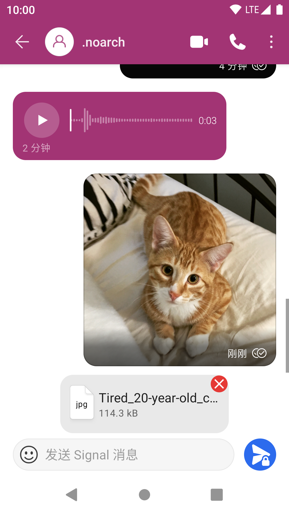有趣的是，尽管 Signal 不提供方便的无损图片发送，你却能预览发送出去和收到的无损图片。

群聊
如果你要把一家人都拉进 Signal, 那么群聊则是你的首选。虽然 Signal 群聊在社交功能上不及一些其它社交为主的即时通讯，但作为只与紧密朋友联系的工具，Signal 群聊做得也不错。
创建群聊和开始新对话的入口一致，都是主界面右下角的 号。不同的是，在进入新建对话界面后你点击“ 新建群组”：
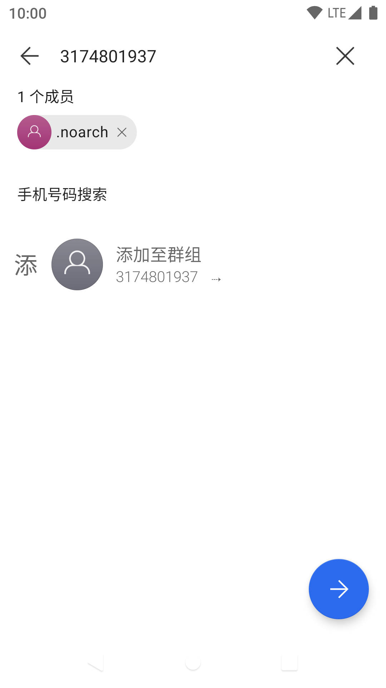然后选择，或是挨个添加想要拉到群里的人，按 继续然后输入群信息：
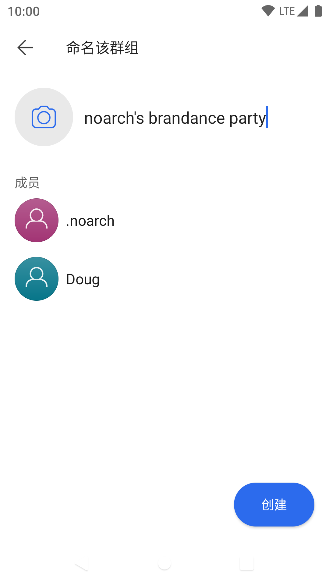最后“创建”就建立了一个新群。

@ 重要通知
像很多其它即时通讯一样，Signal 没有专门的 @ 按钮；
如果你要 @ 一个人，直接用键盘输入 @, Signal 就会弹出一个搜索菜单。
继续输入你要 @ 的用户名，找到目标，点击就可以将特别通知添加到消息里。

到此，noarch 已经介绍了 Signal 的所有核心功能和你一定要进行的隐私设置，剩下的功能你可以自己探索！
附加功能
如果你懒得自己探索所有 Signal 的好玩功能，那么 noarch 在这里列出一些给你吧。
“回复”消息
在一个消息身上向右滑动可以“回复”。它在群里尤其有用，“回复”一个消息和 @ 一样可以特别提醒一个人。

除了充当 @ 的功能之外，“回复”还可以帮你和朋友紧贴话题，避免出现误解。
端到端加密通话
还记得 noarch 在章节开头叫你设置的“总是转发通话”吗？没错，你可以用 Signal 打电话。
除了不消耗通话分钟数以外，Signal 在其网络电话中也使用了端到端加密，意味着你的通话几乎不可能被窃听。
在聊天界面点击 打电话，你会被带到通话界面。
Signal 的通话界面长这样：

在聊天界面点击 则可以直接打视频电话，不过你可以随意在视频和语音电话之间切换。
除此之外，Signal 还可以打群电话；打群电话的操作流程和私聊电话相似。不过，因为 Signal 的群通话不会通知成员，在开始群通话之前你需要事先通知群成员。
阅后即焚
请不要依赖 Signal 阅后即焚功能说出可能会后悔的话。虽然消息本身阅后即焚，但聊天另一方可以通过其它方式记录消息。
得益于端到端加密，Signal 的消息可以定时自毁。
点击聊天界面右上角的 ，然后选择“阅后即焚”；或者点击对方头像进入个人信息页，那里也有“阅后即焚”选项。
Signal 会弹出一个定时器，你可以在这设定消息在阅读后多久自动消失。

设定定时器后，对方头像下方的状态会显示阅后即焚定时器。如果你这时发一条消息，它会在定时器过后消失。

你可以重复上述步骤，进入阅后即焚定时器，将其设定为“关闭”来回到“正常”模式。
验证安全码
如果你看过 privacy.noarch 的“公钥加密简介”章节，你看到这应该一直有一个疑惑：“作为一个端到端加密聊天工具，为什么 Signal 不需要验证公钥指纹？”
答案是，你其实可以手动验证公钥指纹。
在聊天界面点击对方头像查看对方个人信息，然后滑动到底部，“查看安全码”。
熟悉的公钥验证步骤来了：你现在可以和对方面对面验证安全码，或是用一个不同方式与对方核对安全码。
总结
上面 noarch 介绍了 Signal 的常见用法。现在，即使你不太会用其它及时通讯，也应该对 Signal 的操作比较熟悉了。
光看无用，现在去把自己的三次元朋友拉到 Signal 上吧！
记住，与你加密通讯的人越多，你的隐私在宏观上就越安全。